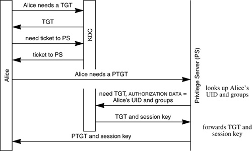
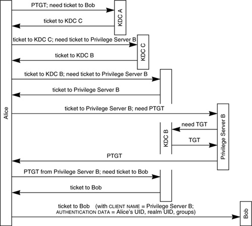

Networking Security Networking Security Networking Security Security Networking Security Networking Security Networking Charlie Kaufman Radia Perlman Mike Speciner Prentice Hall Network Security: Private Communication in a Public World, Second Edition Networking Security Networking Security Networking Security Security Networking Security Networking Security Networking Charlie Kaufman Radia Perlman Mike Speciner Prentice Hall Network Security: Private Communication in a Public World, Second Edition
24.6. DCE Security
I declare this thing openÂwhatever it is.
ÂPrince Philip
DCE stands for Distributed Computing Environment. It is an OSF (Open Software Foundation) product. OSF is a multivendor consortium. DCE security has been incorporated into a number of products from a variety of vendors. DCE security is conceptually similar to Kerberos, and indeed uses Kerberos V5 as one of its components. DCE has a modular design. Kerberos V5 is used for authentication although alternative mechanisms can in principle be substituted. Authentication, authorization, and encryption mechanisms are architecturally separate.
Recall that Kerberos uses KDCs and Ticket Granting Servers, and in the Kerberos chapters we called both things the KDC, since they have to share the same database and same keys and therefore really are the same thing. DCE adds Privilege Servers and Registration Servers. In practice a Privilege Server and a Registration Server come packaged with a KDC. Privilege Servers and Registration Servers are on-line trusted entities, like KDCs. The purpose of a Privilege Server is to get the principal's UUID (universal unique ID), and the groups (see §15.8.3 Groups) to which that principal belongs, to be included in a Kerberos ticket in a secure way. The purpose of a Registration Server is to provide a combined database for a KDC and corresponding Privilege Server. The KDC uses a master key for each principal, along with other stuff that's less interesting. The Privilege Server uses, for each principal, a UUID and the set of groups to which that principal belongs.
ACLs (access control lists) exist outside the context of DCE and in many of the operating systems that support DCE. ACLs could list principals by name, but names are long and subject to change. So in most implementations, ACLs list UIDs (user IDs) and GIDs (group IDs) instead. In Kerberos the principal's name is in a ticket, and Kerberos gives no help in translating from name to UID or in looking up the set of GIDs associated with a principal. Furthermore, Kerberos does not standardize UIDs and GIDs. Different platforms have different forms of UID and GID. For example, most UNIX systems have 32-bit UIDs and GIDs. Some really old UNIX systems have 16-bit UIDs and GIDs. Kerberos assumes systems will translate names to UIDs in some platform-specific way.
DCE standardizes group and user UUIDs at 128 bits long and standardizes DCE ACLs containing those UUIDs. Additionally, DCE does the translation from name to UUID, which is convenient for the applications but makes it difficult for them to use the native ACL format with DCE. The DCE designers, knowing that a UID field of 32 bits was really insufficient, hoped that they'd inspire the operating systems to migrate to their standard of 128 bits. In the meantime most DCE implementations use 32-bit UIDs and GIDs padded out with a constant to look like 128-bit UUIDs.
A UUID in an ACL can belong to either a principal or a group. A user Alice will in general not need to know her own UUID, but usually is capable of remembering her own name, so the login exchange is based on her name.
A user should be authorized to access something if the user's UUID is in the ACL or if a group to which the user belongs is listed in the ACL. DCE wanted an efficient method of knowing to which groups a user belongs, and this was done by including group information in the ticket.
It is interesting how the DCE designers managed to get this information to be included in Kerberos tickets without modifying Kerberos. It would have been a small change to Kerberos to have the KDC maintain UUID and group membership with each principal, and put that information into the ticket. But instead, they designed elaborate mechanisms so they could work with an architecturally pure Kerberos. They still can't use unmodified KDCs, however, because they access the KDC using DCE RPC instead of UDP datagrams, and because management depends on being able to modify data through the Registration Server.
Kerberos V5 has a field known as AUTHORIZATION DATA. Kerberos does not interpret the contents of this field. Rather it allows a user (say Alice), when requesting a TGT, to specify a value for that field. Kerberos just copies the requested value into the AUTHORIZATION DATA field of the TGT, and then copies that field into the AUTHORIZATION DATA field of any tickets issued based on that TGT. Alice's workstation requests TGTs and tickets on Alice's behalf, but does not maintain the database of Alice's UUID or group memberships. Even if it has that information, it can't be trusted to supply it. So Alice's Privilege Server supplies that information. The Privilege Server reads the database of user name/UUID/group membership from the Registration Server.
With DCE, Alice logs in just like in Kerberos (see Figure 24-6). Alice's workstation gets an ordinary Kerberos TGT with Alice's name inside. The workstation then requests a ticket to the Privilege Server, which to the KDC is just another principal in the realm. The workstation then contacts the Privilege Server. The Privilege Server extracts Alice's name from the ticket, looks up Alice's UUID and group membership, and requests a TGT from the KDC with the Privilege Server's name in the CLIENT NAME field, and Alice's UUID and group membership in the AUTHORIZATION DATA. This TGT is referred to in DCE as a PTGT, for Privilege Ticket Granting Ticket. The Privilege Server then, in an encrypted message, gives Alice's workstation the PTGT and the corresponding session key (the one encrypted inside the PTGT). Alice's workstation uses the PTGT and corresponding key instead of the original TGT. Note that the above description is architecturalÂsince the Privilege Server and KDC are packaged together, the messages between them might not actually occur.

Now let's say that Alice asks to talk to server Bob. The workstation sends the PTGT to the KDC, along with the request for a ticket to Bob. The KDC will return to Alice a ticket to Bob with the AUTHORIZATION DATA field copied from the PTGT (so that it will contain Alice's UUID and group membership), and with the CLIENT NAME field equal to the Privilege Server's name. The ticket does not contain Alice's name, but it is not needed, since ACLs list Alice's UUID or use group UUIDs.
A DCE application, Bob, refuses to honor Kerberos tickets unless the Privilege Server's name is in the CLIENT NAME field. Once Bob checks to make sure the Privilege Server's name is in the ticket, Bob uses the AUTHORIZATION DATA field to discover Alice's UUID and group membership. Since the only way for Alice's workstation to obtain such a ticket (and corresponding session key) is through following the proper procedure, Bob can be assured that the UUID and group information in the ticket is correct. Bob checks this against the ACL of the resource Alice is asking to use.
Multirealm DCE is similar to multirealm Kerberos. Suppose Alice is in realm A and Bob (the resource Alice would like to access) is in realm B. Furthermore, assume B is not a principal in A, so that it is necessary to go through transit realm C. (See Figure 24-7.)

Alice (her workstation) uses her PTGT to request from her KDC a ticket to Bob. Her KDC knows that Bob is not local, so instead gives her a ticket to the KDC in realm C. The AUTHORIZATION DATA and CLIENT NAME will get copied from the PTGT into the ticket to C, so the ticket to the KDC in realm C will still contain A's Privilege Server as CLIENT NAME, and Alice's UUID and groups in AUTHORIZATION DATA. Alice uses the ticket to the KDC in C to ask for a ticket to the Privilege Server in Bob's realm (B). C's KDC will return a ticket to the KDC in B. CLIENT NAME will still be A's Privilege Server. AUTHORIZATION DATA will still be Alice's UUID and groups. The TRANSITED field will contain C. Alice then uses the ticket to B's KDC to ask the KDC for a ticket to B's Privilege Server. The reason she needs to do this is to get a ticket with B's Privilege Server's name in the CLIENT NAME field, since Bob will not honor a ticket unless the CLIENT NAME is the name of the Privilege Server in Bob's realm. Alice then contacts B's Privilege Server.
B's Privilege Server checks the ticket for legality. Since the ticket is coming from outside the realm, B's Privilege Server will reject it if the CLIENT NAME is not the standard text string that denotes Privilege Server. B's Privilege Server also checks the TRANSITED field for acceptability. The recommended policy for an acceptable transit path is traversal of the tree implied by the hierarchical names, going up to the least common ancestor and then down, though with a single cross-link allowed on the path. With DCE security it is only Privilege Servers that check the TRANSITED field. In fact, once a Privilege Server returns a PTGT, the transit information is gone. DCE made the decision that it was more practical for the Privilege Server to check the transit information. Kerberos, remember, leaves it up to each application.
Assuming B's Privilege Server accepts the transit information, it requests a ticket from B's KDC that contains Privilege Server B as CLIENT NAME, and Alice's UUID, group information, and realm UUID as AUTHORIZATION DATA. That's a PTGT just like the original PTGT, except now it has B's Privilege Server's name instead of A's. Alice uses that PTGT to request, from B's KDC, a ticket to Bob. Finally she gets a ticket to Bob, with CLIENT NAME Privilege Server B and AUTHORIZATION DATA equal to her UUID, group membership, and realm UUID.
Because of the way that DCE did groups, a user can only be in groups maintained by the Privilege Server of the user's realm. It is possible to put groups and individuals from other realms into a DCE ACL, since each ACL entry effectively consists of a pair of UUIDs: the UUID of either the individual or the group, and the UUID of the realm in which the group or individual resides.
Once Alice and Bob have mutually authenticated, DCE does not use the Kerberos integrity-protected or encrypted data exchanges. Instead, DCE has its own mechanisms for integrity protection, or integrity plus privacy protection within its RPC protocol, using the session key Kerberos does provide. As with Kerberos, the protocols are designed to allow multiple different cryptographic algorithms, but today DCE uses MD5 and DES.
|